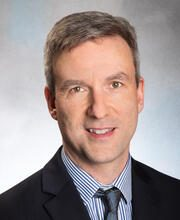

The neurosurgery project is developing new technologies toward the long-term goal of allowing neurosurgeons in diverse settings to implement the advantages of image-guided therapy (IGT) for their patients. We investigate, develop, and validate approaches that address the two key problems in brain tumor surgery: to define the critical brain regions that must not be resected, and to define the extent and nature of the lesion. Put more simply, we create tools that support the neurosurgeon’s crucial decision of what to preserve, and what to remove. Maximizing tumor resection improves patients’ progression-free survival and overall survival; avoiding neurological deficits also improves survival and deeply impacts daily life for patients. Our strategies leverage preoperative and intraoperative imaging data to optimize brain tumor surgery. We are focusing on multimodality imaging data including diffusion MRI (dMRI), functional MRI (fMRI), and on applying mass spectrometry (MS) as a molecular analysis tool for tumor detection. To improve understanding of critical, individual patient brain functional anatomy, we jointly model functional and structural data for semi-automatic and improved localization of eloquent brain structures. To guide surgical decision making by better defining tumor margins, we investigate MS as an intraoperative molecular diagnostic method. Achievement of these goals supports the overall goal of NCIGT that is relevant for brain tumor surgery: to maximize the extent of tumor resection while minimizing the risk of neurologic deficit. Our projects are:
Computer-aided individualized labeling of critical brain structures. fMRI and dMRI provide pre-operative non-invasive maps of patients’ functional activations and white matter connections. fMRI and dMRI have been shown to increase resection and time of survival, but their translation to widespread clinical use faces significant challenges. Interpretation of the data is difficult, requiring extensive experience and time, and requiring software tools that are unwieldy and not clinically oriented. In order to provide more useful pre-operative mapping, we create a system that produces labeled maps of individual brain functional anatomy, even in cases with missing data, distortion, edema, or reorganization. Our overall strategy is to model the anatomical relationship between structural connections and functional activations, and to build models designed to generalize to patients with mass lesions or displacement, with the aid of machine learning algorithms. We are investigating the following novel and complementary tools: labeling of fMRI activations to produce a segmentation of a discrete set of cortical features of importance for neurosurgery, semi-automatic fMRI thresholding, multimodal calculation of language lateralization, and iterative joint labeling of fMRI activations and fiber tracts. We are developing the computational tools in stages so that each tool can be used either alone, or as part of the full system. We especially focus on the challenge of language mapping interpretation that requires identification of both the crucial language-specific functional cortical regions and the crucial language-specific fiber tracts. We are validating results using expert raters and intraoperative electrocortical stimulation data. Overall, we are creating the first image analysis software that can semi-automatically produce a multimodal structure-function map of individual patient anatomy for neurosurgery. (Contact: Lauren O’Donnell)
Optimal resection guided by mass spectrometry. Intraoperative decision making regarding how much tissue to resect during brain tumor surgery is of critical importance, yet as the surgery progresses the surgeon has access to less and less reliable data to guide this decision. To optimize the surgical resection of brain tumors, surgeons need more information to assess the boundaries between tumor and healthy tissue. In order to give surgeons a better understanding of the tissue being resected, we are investigating MS as an intra-operative molecular analysis tool for surgical guidance in the Advanced Multimodality Image Guided Operating Suite (AMIGO). The introduction of MS into routine surgical protocols for real-time characterization of tissue relies on the development and validation of the molecular reference system. The current iteration of the intraoperative platform is based on an ambient ionization methodology that allows for the analysis of tissue with little to no sample preparation. We validate the technology for real-time identification of surgical margins and molecular diagnosis by comparing against standard histopathology. The neurosurgeon stereotactically samples multiple specimens from each brain tumor resection and these are analyzed with a mass spectrometer in the AMIGO suite. We also correlate molecular, imaging and histopathologic findings in the 3D tumor space. Overall, our goal is to provide data equivalent or better to intraoperative MRI with less workflow disruption, less cost, and far less infrastructure needs. (Contact: Nathalie Agar)
The computation project is leveraging recent progress in ultrasound-ultrasound (US) registration and in hybrid US-MRI technology to develop synergistic software and hardware technology that is aimed at improving surgical and interventional guidance in the presence of tissue deformation or motion, issues that complicate treatment monitoring or comparisons to pre-operative images and treatment plans. Our approach to addressing deformation problems in image guided therapy (IGT) leverages our recent work in feature-based US-US registration, where image content is modeled in terms of local scale-invariant image features, i.e., distinctive patterns of echogenic anatomical tissue that can be automatically extracted from images and used as the basis for registration. Our solution for motion in IGT is built upon our recent developments in hybrid US-MRI technology that acquires MRI and ultrasound simultaneously to exploit the relative strengths of MRI (high spatial resolution and excellent soft tissue contrast), and US (high frame rate). Much of the proposed research deals with providing solutions to registration problems for IGT applications, such as tissue deformation fields, and we believe that in this context it is important to characterize the potential uncertainties in these solutions, similarly to providing error bars in other estimation problems.To this end we are developing registration-with-uncertainty algorithms that incorporate random process models of spatial uncertainty. The technology is evaluated in the context of our testbed clinical projects, image-guided neurosurgery and abdominal cryotherapy, in the AMIGO suite, our advanced interventional suite that includes intra-operative 3T MRI, ultrasound and PET/CT. The hybrid US-MRI approach enables rapid updates to MRI images to accommodate, e.g., breathing motions during cryoablation procedures.In addition, US-US registration algorithms facilitate improvements in US-updated neurosurgical guidance, and have potential IGT applications in our program or elsewhere, for example in prostate biopsies. In order to facilitate dissemination of these algorithms to the broader IGT community, we distribute software components in the open-source SlicerIGT platform. Our projects are:
Registration algorithms for MRI and US with emphasis on uncertainty and algorithm performance. We continue algorithm developments aimed at characterizing uncertainty and accuracy in image registration,and tissue deformation estimation from implanted trackers,that are based on Gaussian Random Fields (GRF). We are also developing algorithms that estimate surgical tissue deformations from our feature-based ultrasound / ultrasound registration technology. Finally, we translate the developed algorithms into AMIGO using the SlicerIGT platform by providing extensions that visualize deformed MRI based on intraoperative US, associated registration uncertainty, and integrated laser surface scanning for neurosurgery. (Contact: William Wells)
Technology for simultaneous US-MRI acquisition for monitoring procedures. We are developing machine learning techniques that use high bandwidth US data to estimate motion and deformation in MRI images. We are also further generalizing the hybrid US-MRI approach by exploiting information from 256 independent channels, from a custom-built MR-compatible 256-element 2D US transducer array provided by an industrial partner. We are developing a pre-scan calibration (“learning”) phase that employs simultaneously-acquired MRI and USdata. We will deploy on-line deformation-corrected updates of MR as they become available from the scanner, for monitoring cryoablations. (Contact: Bruno Madore)
Software and Documentation
3D Slicer, a comprehensive open source platform for medical image analysis, contains several modules and functions that have been contributed by us for Computation. These include:
- EndoscopyNavigation (Slicer version 3.6)
- SegmentCAD
- HeterogeneityCAD
- TrackerStabilizer
Source Code for the Paper Titled: Efficient and Robust Model-to-Image Alignment using 3D Scale-Invariant Features (Med Image Anal. 2013 Apr;17(3):271-82.)
Data
- MRI Acquired to Guide Gynecologic Brachytherapy Catheter Placement
Links
Content carried over from https://ncigt.org/computation-core/.